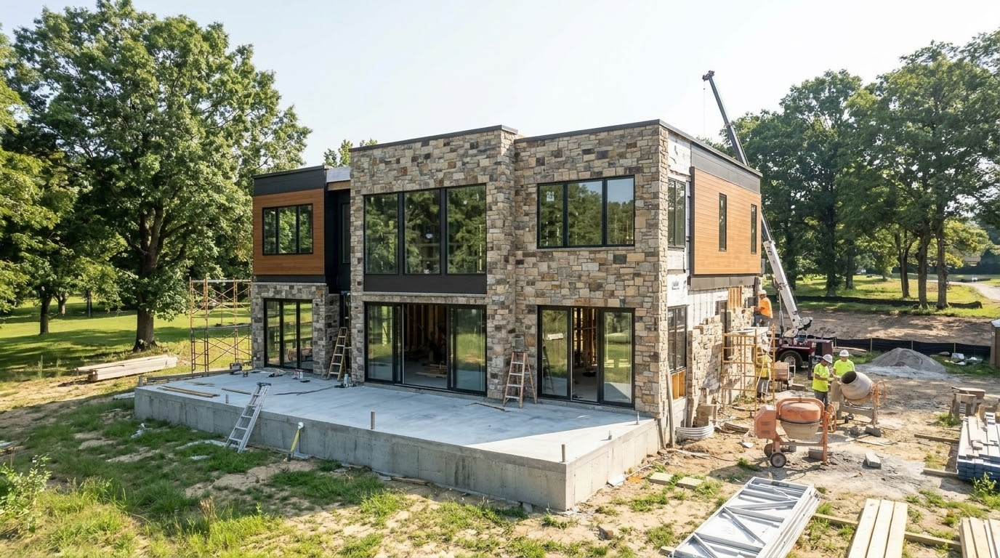

CAM 01 • FOCUS
01 / 03
المرحلة 01
الأساسات والهيكل الإنشائي
بداية تنفيذ الهيكل الرئيسي وتحديد المساحات والفتحات المعمارية على الموقع قبل مرحلة التشطيبات.
كل مرحلة تظهر بوضوح مع حركة كاميرا وتدقيق بصري يتفاعل مع تمريرك لتقديم المشروع بشكل منظم ومقنع للعميل.
بداية تنفيذ الهيكل الرئيسي وتحديد المساحات والفتحات المعمارية على الموقع قبل مرحلة التشطيبات.

إبراز الطابع المعماري للفيلا عبر دمج الحجر الطبيعي والزجاج الواسع مع محيط المشروع.

اكتمال الواجهة وتنسيق الممر والحديقة مع إضاءة مسائية تبرز جاهزية العقار أمام العميل.
يُعرض بتسلسل واضح على الهاتف دون تكديس أو إخفاء لأي مرحلة من مراحل التنفيذ.
العودة إلى البداية